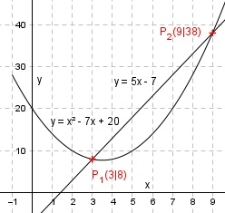

Aufgabe 80 An welchen Stellen x schneiden sich die Parabel y = x2 - 7x + 20 und die Gerade y = 5x - 7? Für die Schnittpunkte gilt: x2 - 7x + 20 = 5x – 7 |-5x x2 - 12x + 20 = – 7 |+7 x2 - 12x + 27 = 0 p, q – Formel: p = -12 ; q = 27 x1,2 = x1,2 = 6 ± x1,2 = 6 ± x1,2 = 6 ± 3 x1 = 6 – 3 = 3 x2 = 6 + 3 = 9 Die Schnittpunkte liegen bei x = 3 und x = 9.
